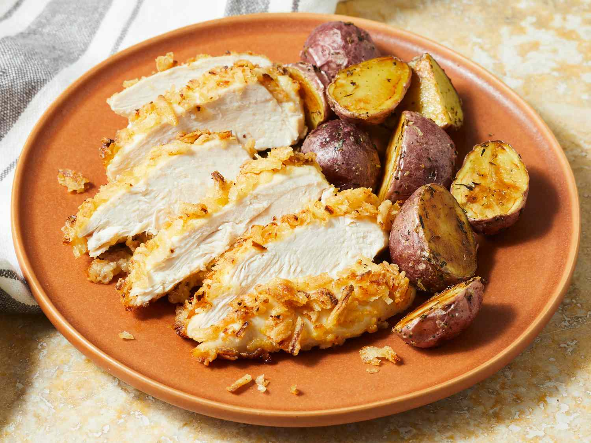

Home
Crunchy French Onion Chicken

Description
Quicky and easy crunchy baked French onion chicken.
Ingredients
- French-fried onions, crushed
- 1 large eggr
- Skinless, boneless chicken breast halves
Steps
- Preheat the oven to 400 degrees.
- Spread crushed onions in a shallow bowl and pour egg into a separate bowl.
- Dip chicken into beaten egg then press into crushed onions.
- Place breaded chicken on a baking sheeet.
- Bake chicken until no longer pink in the center, about 20 minutes.
- Ready to serve!